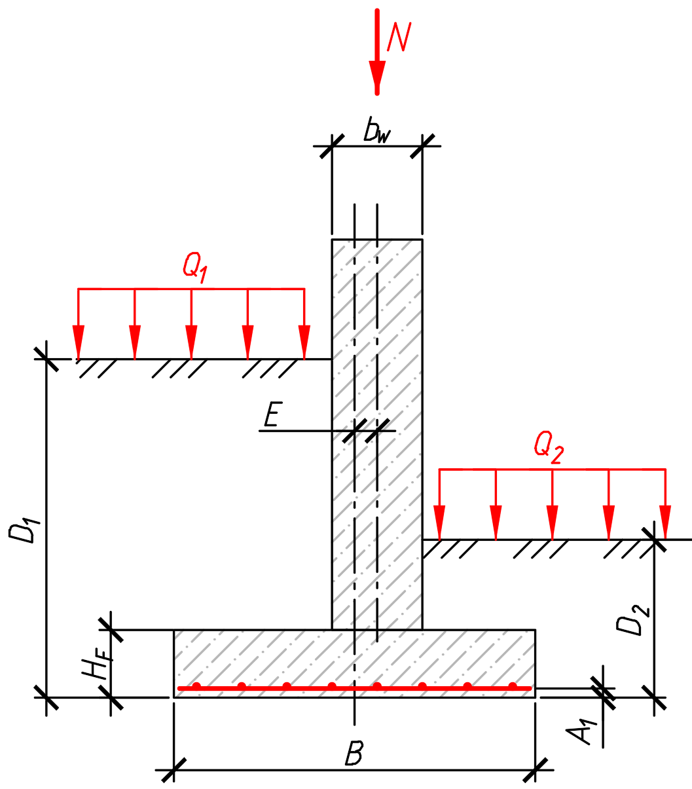

| bw — толщина стены, мм | |
| B — ширина подошвы, мм | |
| hf — высота фундамента, мм | |
| D1 — глубина заложения, сторона 1, мм | |
| D2 — глубина заложения, сторона 2, мм | |
| a1 — защитный слой арматуры, мм | |
| e — смещение оси стены от оси подошвы, мм |

| Ø хомута, мм |
| Число ветвей на 1 п.м стены | |
| Шаг вдоль стены s, мм |
| N — нормативная нагрузка, тс/м | |
| q1,вр — полезная (временная) нагрузка, сторона 1, тс/м² | |
| q2,вр — полезная (временная) нагрузка, сторона 2, тс/м² | |
| Q1 — пригрузка сбоку, сторона 1 (грунт+врем.), тс/м² | — |
| Q2 — пригрузка сбоку, сторона 2 (грунт+врем.), тс/м² | — |
| φ' — угол внутр. трения, ° | |
| c' — удельное сцепление, тс/м² | |
| γ — уд. вес грунта, т/м³ | |
| γ' (ниже подошвы, с учётом взвешивания), т/м³ |
| R0 — расчётное сопротивление грунта, тс/м² | |
| γII — уд. вес грунта над подошвой, т/м³ |
| h слоя, м | E, МПа | γ, т/м³ |
|---|
| Предельная величина деформации фундамента Su, мм ? |
Табл. В.1 «Предельные деформации оснований». Для ленточного фундамента под несущую стену — см. поз. 3. Полные примечания (1–5) — в тексте норматива.
|
||||||||||||||||||||||||||||||||||||||||||||||||||||||||||||||||||||||||||||||||||||||||||||||||||||||||||||||||||||||||||||||||||||||||||||
Область применения. Непрерывный ленточный фундамент под несущую стену (равномерная линейная нагрузка). Стена может быть смещена относительно оси подошвы (эксцентриситет e) — калькулятор пересчитывает трапециевидную эпюру давления и проверяет обе стороны отдельно. Момент от вышележащих конструкций (кроме эксцентриситета самой стены) не учитывается. Основание принимается однородным (для несущей способности по Бринч-Хансену); послойность грунта учитывается только в расчёте осадки.
В расчёт входят проверки: несущая способность основания (с учётом веса фундамента и грунта на выступах подошвы), армирование подошвы на изгиб, срез у грани стены — по обеим сторонам при смещении, осадка (со сравнением с предельно допустимой Su, если задана).
Не входит в объём расчёта:
1. Геометрия и материалы фундамента. Слева — геометрия (толщина стены, ширина подошвы B, высота фундамента, глубина заложения D₁/D₂ — отдельно для каждой стороны, защитный слой арматуры, смещение оси стены e); по центру — схема обозначений; справа — армирование фундамента (см. ниже).
Армирование фундамента (справа в разделе 1). Три группы стержней: рабочая арматура нижней сетки (задаётся пользователем, на изгиб подошвы), поперечная арматура нижней сетки (перпендикулярно рабочей, вдоль стены — Ø/шаг подбираются автоматически под условие As ≥ 20% от рабочей, СП РК EN 1992-1-1 §9.3.1.1(2), можно переопределить) и вертикальная (хомуты у грани стены, на срез). По умолчанию Ø хомута = 0 (без хомутов); если расчёт показывает, что среза недостаточно, задайте Ø хомута > 0, число ветвей и шаг — калькулятор проверит заданную раскладку (не забудьте конструктивный анкерующий стержень сверху, хомуту нужна точка анкеровки с обеих сторон). Класс арматуры в строках Ø/шаг/класс синхронизирован между собой. Класс бетона задаётся под блоком вертикального армирования. Если и с хомутами среза недостаточно — увеличьте hf, уменьшите шаг или увеличьте Ø/число ветвей.
2. Загружения и эпюра давления. Нагрузка N (тс/м на 1 п.м стены), полезная (временная) нагрузка сбоку q1,вр/q2,вр (тс/м², задаётся пользователем — вес автотранспорта, складируемых материалов и т.п.) и итоговая пригрузка Q₁/Q₂ слева от самой эпюры. Q₁/Q₂ калькулятор считает автоматически: Q = γ·D (вес грунта обратной засыпки над консолью, по своей стороне) + полезная нагрузка этой стороны — вручную их вводить не нужно, достаточно задать D₁/D₂ в разделе 1 и, если есть, временную нагрузку. Если с одной стороны подвал/выемка грунта — уменьшите D с этой стороны (вплоть до 0); если насыпь выше уровня земли — увеличьте. В расчёте несущей способности (раздел 3) используется меньшее из Q₁/Q₂ (менее выгодная сторона), а в эпюре давления и весе консолей пригрузка учитывается по каждой стороне отдельно. Калькулятор сам применяет два сочетания коэффициентов по DA1 (Проектный подход 1, НТП РК 07-01.4-2012): N₁=1,35·N — для расчёта конструкции (арматура, срез), N₂=1,0·N с ослабленным грунтом — для несущей способности. При e=0 стена по центру (симметрично); при e≠0 (или Q₁≠Q₂) эпюра давления становится трапециевидной, а изгиб/срез считаются отдельно для каждой стороны (берётся более нагруженная). На схеме показано валовое (реальное контактное) давление под подошвой — оно растёт при добавлении любой нагрузки; для расчёта армирования используется чистое давление (валовое минус собственный вес консоли и пригрузка непосредственно над ней) — см. «Подробности расчёта» в блоке «Армирование подошвы».
3. Параметры основания. Два режима: по физическим характеристикам φ'/c'/γ (точный расчёт по Бринч-Хансену, НТП РК 07-01.4-2012) или по готовому табличному R0 — оба используют пригрузку Q₁/Q₂, заданную в разделе 2. Несущая способность считается по эффективной ширине B'=B-2|e| (НТП РК 07-01.4-2012) и с учётом полного веса — нагрузка от стены + собственный вес фундамента + реальная пригрузка на выступах подошвы (Q₁·c₁+Q₂·c₂, по своей стороне). Результат Rd и вердикт σ ≤ Rd выводится в карточке «Выводы» (шкала процента использования).
4. Осадка. Считается послойным (компрессионным) методом — задайте толщину, модуль деформации и удельный вес каждого слоя грунта (реальные геологические слои, как есть). Если слой толще 0,4·B, калькулятор автоматически дробит его на элементарные подслои для точности суммирования (НТП РК 07-01.4-2012) — вручную дробить не нужно. Калькулятор отслеживает нижнюю границу сжимаемой толщи (НГСТ) — часть толщи (слои или подслои), где дополнительное давление от нагрузки упало до ≤20% от бытового давления грунта, в сумму осадки не включается (показана в разбивке серым/с пометкой). Если заданных слоёв не хватает, чтобы дойти до НГСТ, калькулятор выдаст предупреждение — добавьте ещё слоёв на бо́льшую глубину. Под результатом — необязательное поле «Предельная величина деформации фундамента Su»: если задать значение, калькулятор сравнит с ним расчётную осадку и выдаст вердикт (✓/✗).
Разделы с формулами и промежуточными шагами свёрнуты по умолчанию (▶ «Подробности расчёта») — раскрываются по клику, если нужно проверить выкладки вручную.
Сохранение и печать. Введённые данные сохраняются в браузере автоматически. Кнопка «Сохранить» выгружает их в файл .json — его можно позже загрузить обратно через «Загрузить» на этом же или другом устройстве. «Расчётная записка» формирует печатный отчёт со всеми проверками и итоговым заключением.